This is the first time I met Professor King in 2018 after a friend whom was admitted to SI introduced me to him. I was able to sit in on his class with her and she took this photo of us while we spoke. The next image is of me having the opportunity to speak at a rally that Sen. Bernie Sanders spoke at as the main speaker.
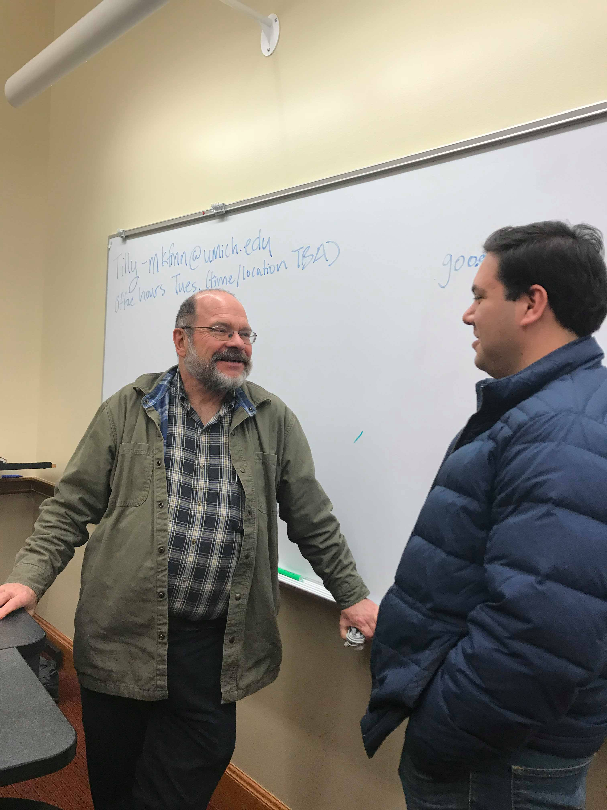The next four images consist of my summer internship experience in 2019 in Washinton D.C. I was fortunate enough to get to work in Congressman Castro's office, whose district is in San Antonio.
 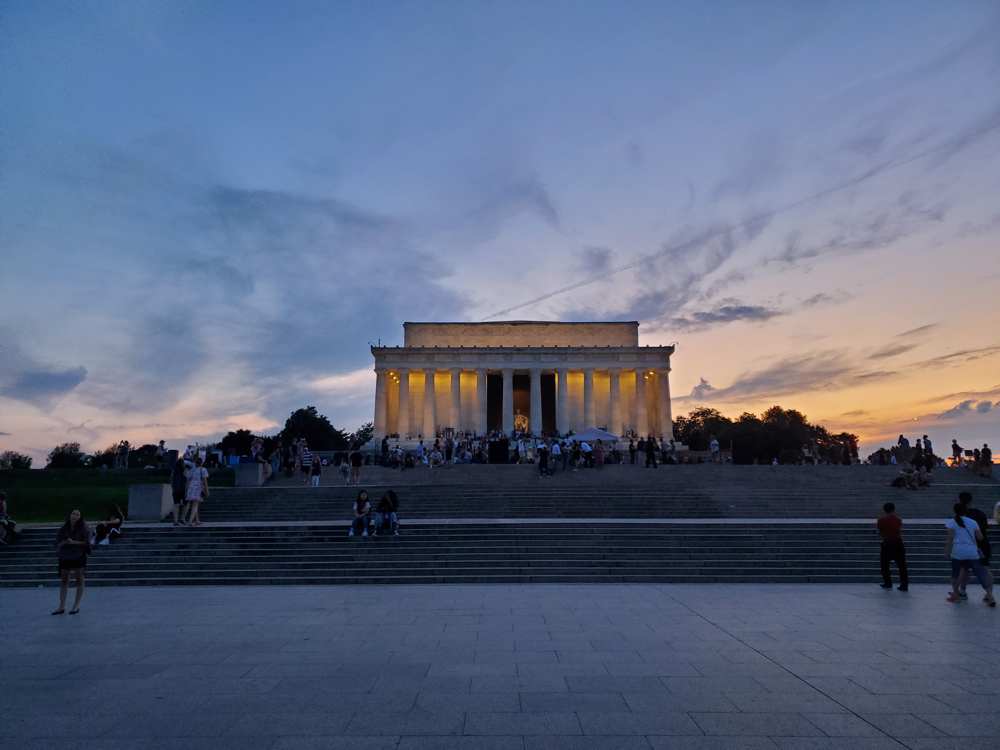
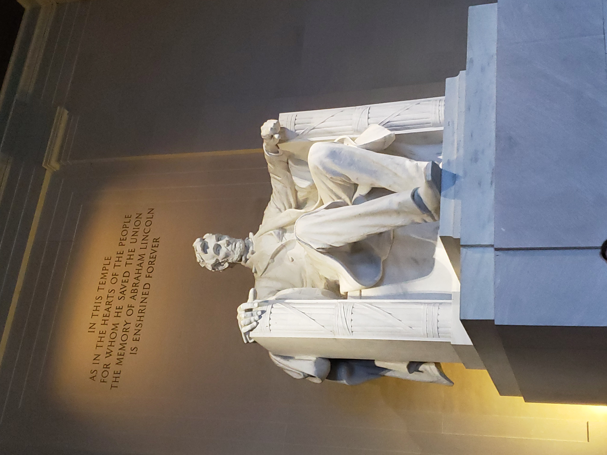
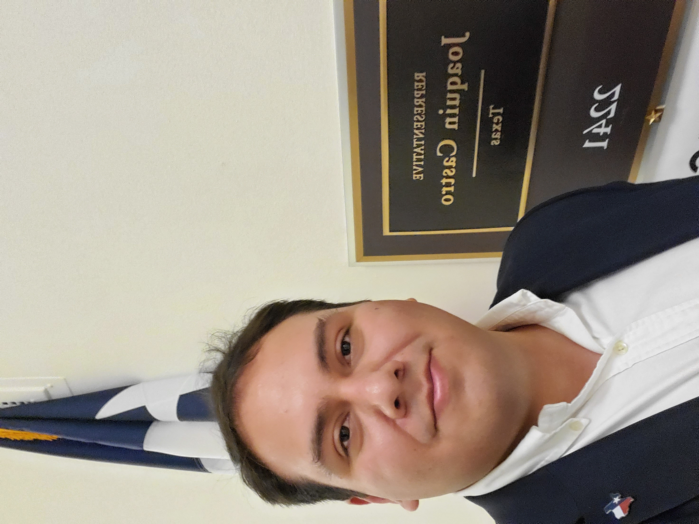
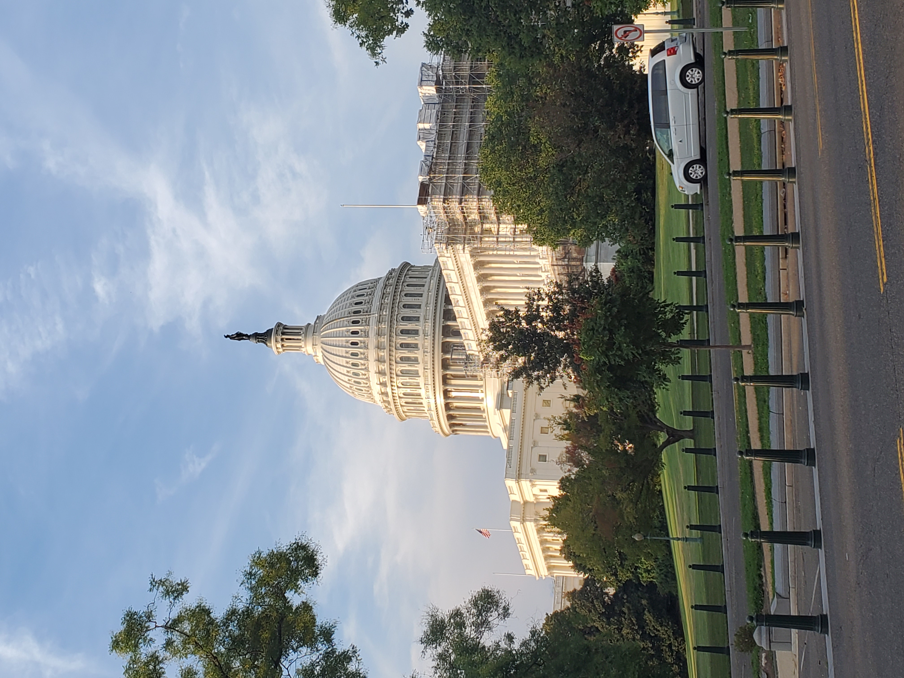
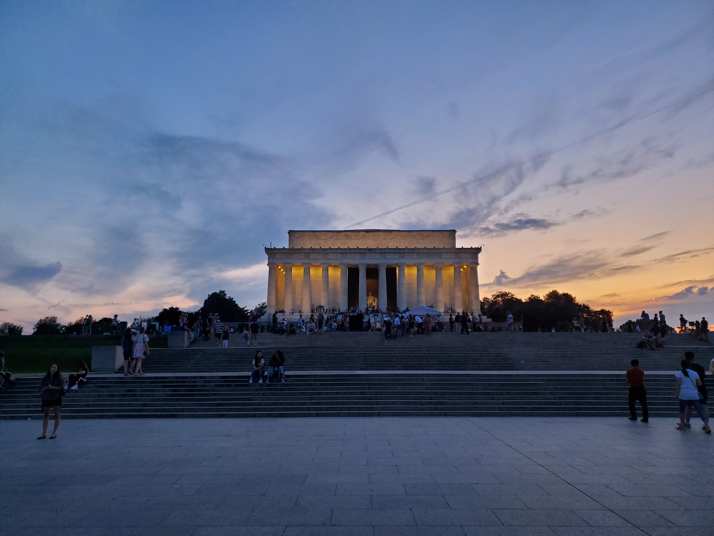
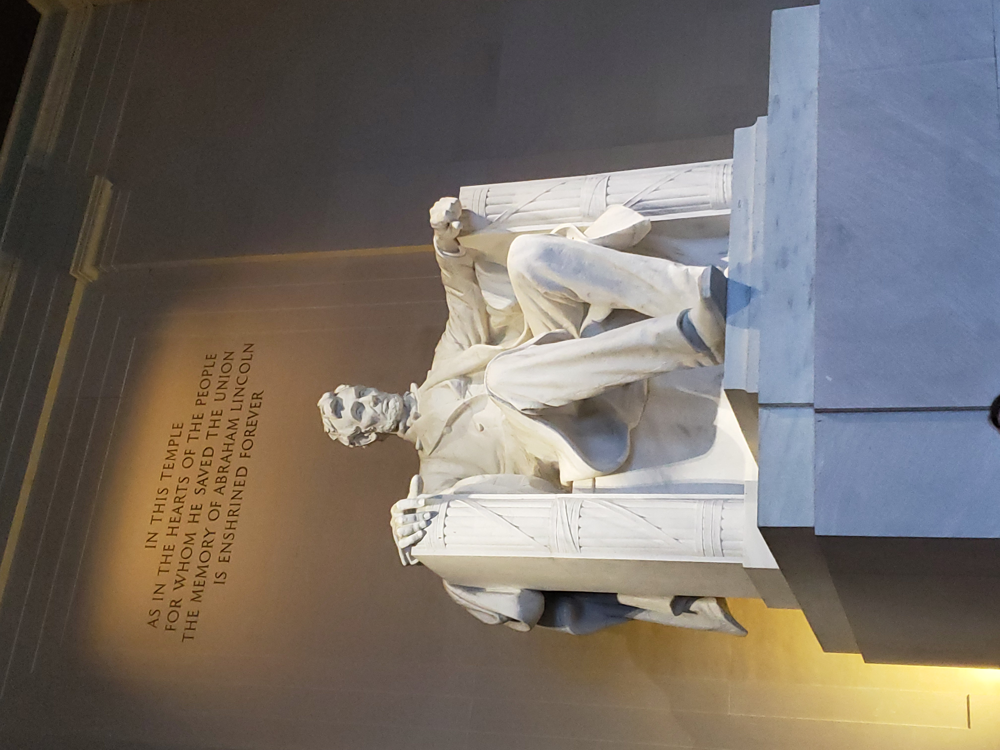
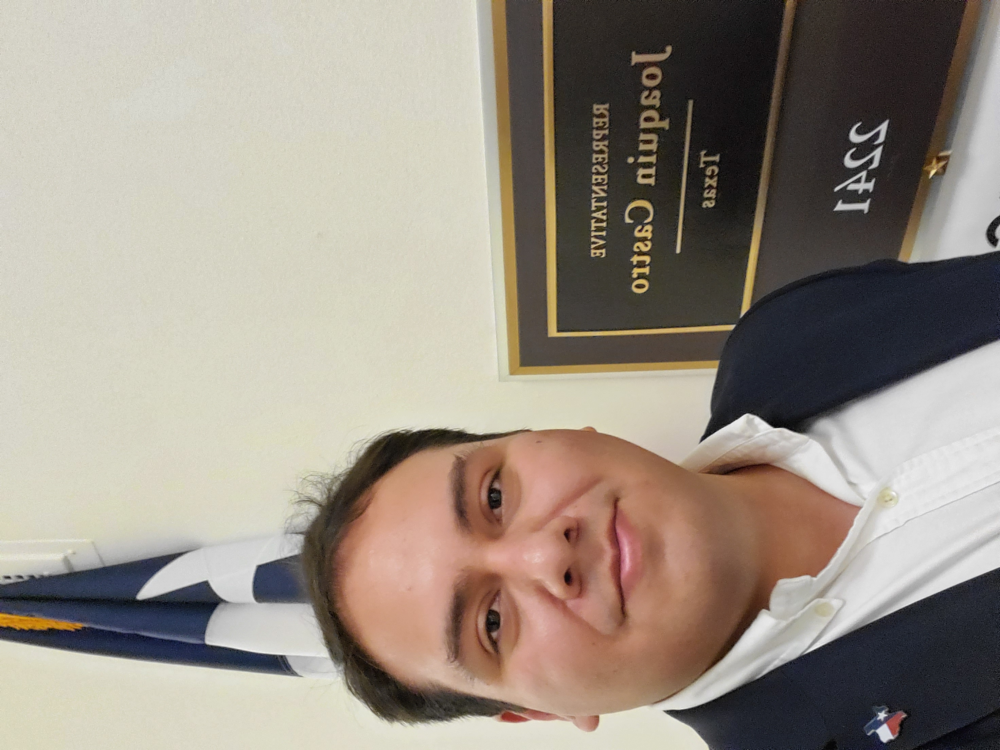
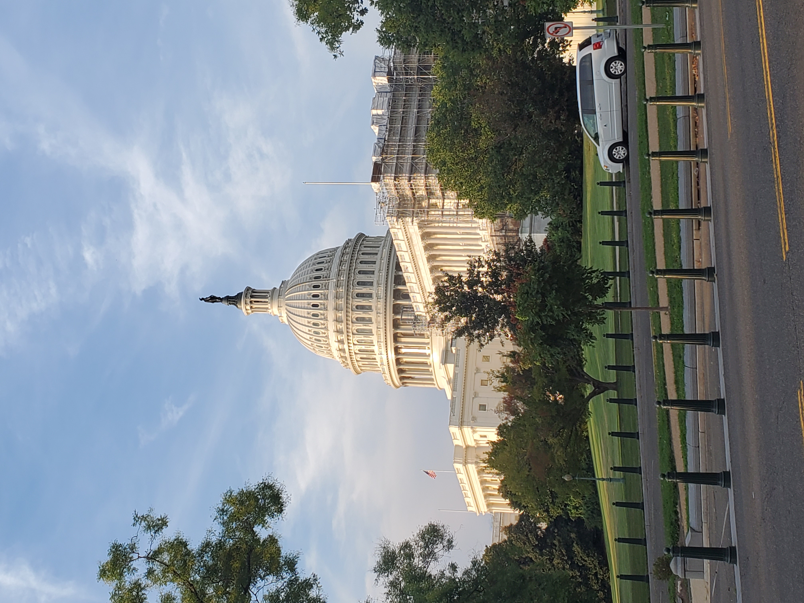
This is when I got to meet Anand Giridharadas while I was a student at Lansing Community College. I worked as a student representative on the OneBookOneLCC Committee, which chose a book for the entire campus to read in their Literature/Writing courses.
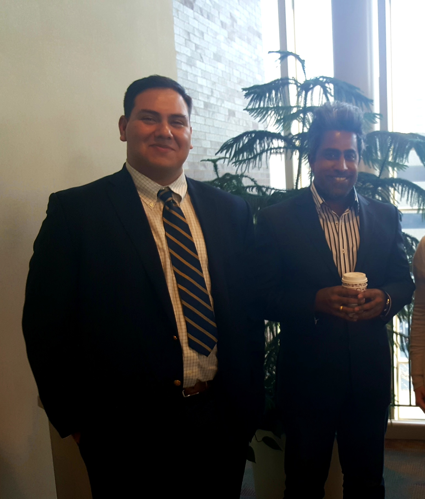These last three images are when I went on a trip to th Upper Peninsula or U.P. as Michiganders like to say. It was my first time visiting Mackinac Island and seeing Tahquamenon Falls.

 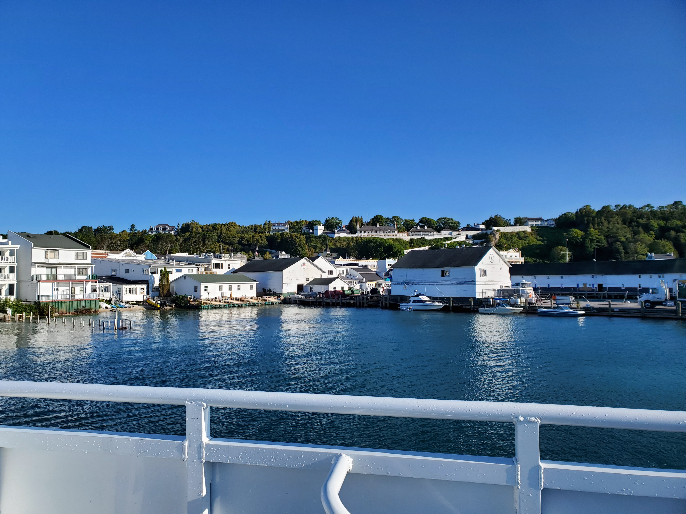
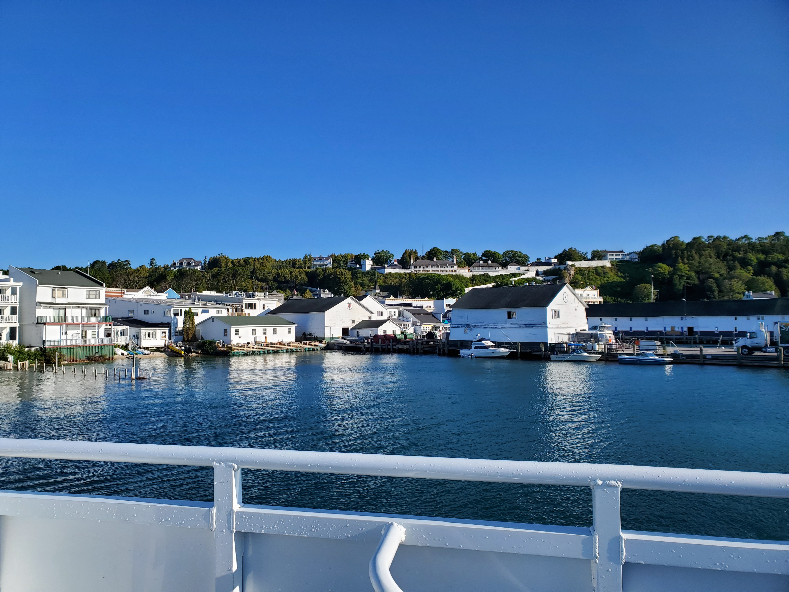